Mathematical Foundations of AI & ML
Unit 13: Physics-Informed Learning
Prof. Dr. Philipp Pelz
FAU Erlangen-Nürnberg


Title + Unit 13 positioning
- Unit 12 showed how to quantify uncertainty. Unit 13 shows how to reduce it using physics.
- Physics-informed ML embeds domain knowledge into the learning process.
- When data is scarce, physics provides the missing information.
Learning outcomes for Unit 13
By the end of this lecture, students can:
- explain the PIML philosophy and why physics reduces data requirements,
- design data enrichment pipelines using physical transformations,
- formulate the PINN loss \((J = J_{\text{data}} + \lambda J_{\text{physics}})\),
- apply the Lagaris substitution to enforce boundary conditions exactly.
The data scarcity problem
- In materials science, labeled data is expensive: each tensile test destroys a sample.
- Simulations are slow: one FEM run can take hours.
- But we know the governing physics: conservation laws, constitutive equations, symmetries.
- Key insight: physics is free information — we should use it.
What is physics-informed machine learning?
- Incorporating known physical laws, symmetries, and constraints into the ML model or training process.
- Not replacing physics with ML — combining them.
- The model is trained on both data and physical principles.
- Result: better predictions with less data, and physically consistent outputs.
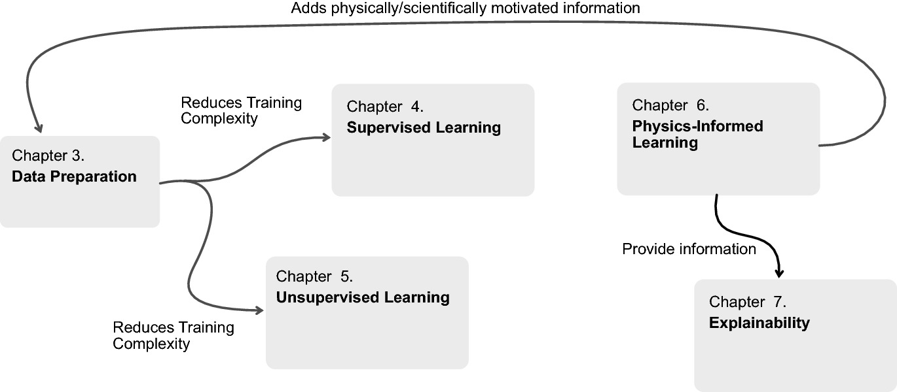
The PIML spectrum
| Approach | Physics role | Example |
|---|---|---|
| Data-only | None | Standard NN |
| Data-enriched | Feature engineering | FFT, derivatives |
| Physics-constrained loss | Penalty term | PINN |
| Physics-embedded arch | Structure | Equivariant NN |
| Pure simulation | Full model | FEM, CFD |
- Hybridization: PIML is not one method but a spectrum.
- Trade-off: More physics usually means harder implementation but less data needed.
- Materials Context: From empirical fit to ab-initio simulations.
Why physics helps: inductive bias
- Without constraints, a neural network considers all possible functions.
- Physical laws eliminate functions that violate known principles.
- Fewer plausible models \(\) less data needed to identify the correct one.
- This is the same principle as regularization (Unit 8), but with informed constraints (Neuer et al. 2024).
Connection to regularization (Unit 8)
- L2 regularization: “prefer small weights” — generic, uninformed.
- Physics constraint: “the output must satisfy \( = 0\)” — specific, informed.
- Both restrict the hypothesis space, but physics constraints eliminate physically impossible solutions.
- Physics-informed regularization provides stronger guarantees with less data.
The statistical balance argument
- Learning requires information. Information comes from data and prior knowledge.
- More physics knowledge \(\) less data needed (and vice versa).
- The total information budget is shared: \( + = \).
- This is why PINNs can work with very small datasets (Neuer et al. 2024).
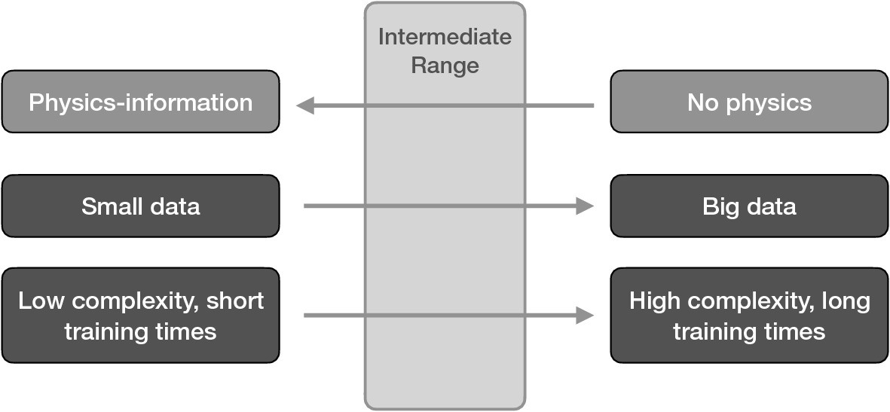
Taxonomy of PIML approaches
- (a) Data enrichment: add physics-derived features to inputs (preprocessing).
- (b) Loss-function constraints: add PDE/ODE residuals to the training loss (PINNs).
- (c) Architectural constraints: build symmetries into the network structure (equivariant NNs).
- (d) Hybrid simulation: couple NN with physics solver (differentiable simulation).
Roadmap of today’s 90 min
- 10–25 min: Data enrichment — FFT, wavelets, derivatives, expert knowledge.
- 25–40 min: Automatic differentiation for physics constraints.
- 40–55 min: PINN loss function — design, collocation, lambda balancing.
- 55–70 min: Lagaris substitution — hard boundary condition enforcement.
- 70–80 min: Occam’s razor, information theory, and small-data advantage.
- 80–85 min: Limitations and open challenges.
Data enrichment: the idea
- Transform raw data using known physics to create additional, more informative input features.
- The model receives both raw measurements and physics-derived quantities.
- No change to the model architecture — just better inputs.
- This is the simplest form of physics-informed ML (Neuer et al. 2024).
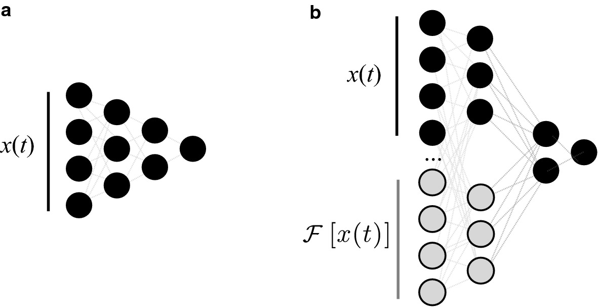
FFT-based enrichment
- Compute the Fourier spectrum of time-series data.
- Frequency-domain features capture periodicity, resonance frequencies, and harmonic content.
- Particularly useful for vibration data, acoustic signals, and cyclic processes.
- Implementation:
np.fft.fft(signal)→ magnitude and phase spectra as additional features.

Wavelet-based enrichment
- Wavelet transforms capture time-frequency information simultaneously.
- Unlike FFT, wavelets localize both time and frequency — useful for transient phenomena.
- Continuous wavelet transform (CWT) or discrete wavelet transform (DWT).
- Application: detecting phase transitions in temperature-time curves.
Derivative-based enrichment
- Compute numerical derivatives of input signals:
- First derivative: rates of change (cooling rate, strain rate).
- Second derivative: curvature, acceleration.
- Derivatives encode dynamics that raw values do not capture.
- Can also compute spatial gradients for field data.
Histogram and statistical enrichment
- Compute histograms, moments, or percentiles of input distributions.
- Summarize variability within a measurement window.
- Example: instead of raw vibration signal, provide mean, std, skewness, kurtosis, and percentiles.
- Reduces dimensionality while preserving statistical information.
PCA on spectral data
- High-dimensional spectra (2000 wavelengths) → PCA → top-\(k\) components.
- Captures dominant variation patterns as compact features.
- The PCA components have physical interpretation (e.g., baseline, peak shape, noise).
- Combine with raw peak features for a rich input representation.
Expert knowledge objects
- Domain experts specify transformations based on physical understanding:
- Dimensionless groups (Reynolds number, Nusselt number).
- Known functional relationships (Arrhenius equation for temperature dependence).
- Physical units and scaling.
- These “expert knowledge objects” are formalized as input transformations (Neuer et al. 2024).
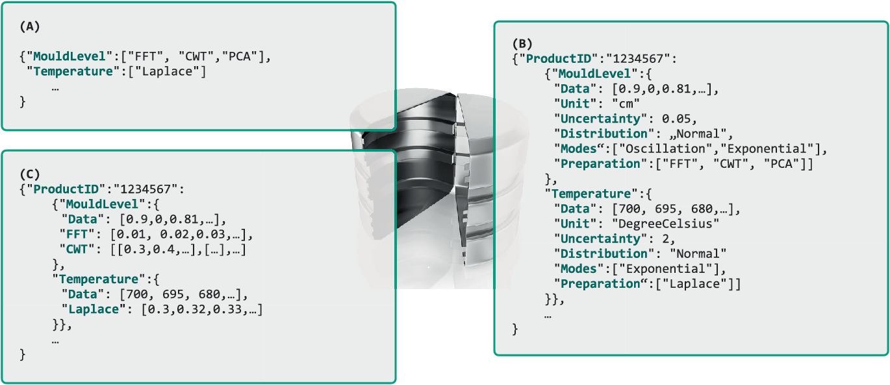
Checkpoint: data enrichment design
- Scenario: Your raw features are temperature vs time for a cooling process.
- What enriched features would you add?
- Derivatives: cooling rate \(dT/dt\), acceleration \(d2T/dt2\).
- FFT: frequency content (periodic fluctuations).
- Statistics: peak temperature, time to reach 50% cooling.
- Domain: dimensionless Biot number if geometry is known.
Automatic differentiation recap
- Modern frameworks (PyTorch, JAX, TensorFlow) implement exact automatic differentiation.
- Backpropagation (Unit 5) computes \(L / \) — derivatives w.r.t. parameters.
- For PINNs, we also need \(f_{} / \) — derivatives w.r.t. inputs.
- Both are computed by the same auto-diff machinery.
Using auto-diff for physics constraints
- Key insight: auto-diff can compute any derivative of the NN output w.r.t. any input variable.
- \(f / t\), \(^2 f / ^2\), \(f\) — all available at no extra modeling effort.
- These derivatives are exact (up to floating-point precision), not finite differences.
- This enables evaluating PDE residuals within the training loop.
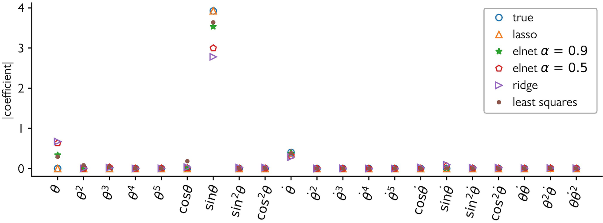
Example: enforcing smoothness
- Add a penalty on the second derivative:
\[ J_{\text{smooth}} = \frac{1}{M}\sum_{j=1}^{M}\left(\frac{\partial^2 f_{\boldsymbol{\theta}}}{\partial \mathbf{x}^2}(\mathbf{x}_j)\right)^2 \]
- Encourages smooth predictions without constraining the function form.
- Computed via two applications of auto-diff: first \(f/\), then \(^2 f/^2\).
Example: conservation law
- Mass conservation: \( + () = 0\).
- Penalize violation:
\[ J_{\text{cons}} = \frac{1}{M}\sum_{j=1}^{M}\left(\frac{\partial \rho_{\boldsymbol{\theta}}}{\partial t} + \nabla \cdot (\rho_{\boldsymbol{\theta}} \mathbf{v})\right)^2 \]
- The model learns to respect mass conservation without explicit conservation in the architecture.
The PINN loss function
\[ J = J_{\text{data}} + \lambda \cdot J_{\text{physics}} \]
Loss Decomposition:
- \(J_{\text{data}}\): MSE on sparse labeled points.
- \(J_{\text{physics}}\): Residual of the PDE/ODE.
- \(\lambda\): Balancing hyperparameter.
- Two sources of information: observed data and known physics.
- The composite loss trains the model to fit data and satisfy physical laws simultaneously.
- This is the core formulation of Physics-Informed Neural Networks.
J_data: data fidelity
\[ J_{\text{data}} = \frac{1}{N}\sum_{i=1}^{N}\|\mathbf{y}_i - f_{\boldsymbol{\theta}}(\mathbf{x}_i)\|^2 \]
- Standard MSE on labeled observations.
- Data points are typically sparse and noisy in engineering applications.
- This term alone would give a standard NN.
J_physics: physics residual
\[ J_{\text{physics}} = \frac{1}{M}\sum_{j=1}^{M}\|\mathcal{R}(f_{\boldsymbol{\theta}}, \mathbf{x}_j)\|^2 \]
- \(\) is the residual of the governing equation (PDE, ODE, conservation law).
- Evaluated at \(M\) collocation points sampled across the domain.
- No labels needed for physics loss — just the equation.
Collocation points
- Points in the domain where the physics residual is evaluated.
- Typically sampled uniformly or according to an adaptive strategy.
- More collocation points → better physics enforcement but higher cost.
- Collocation points do not need observed data — they provide physics supervision for free.
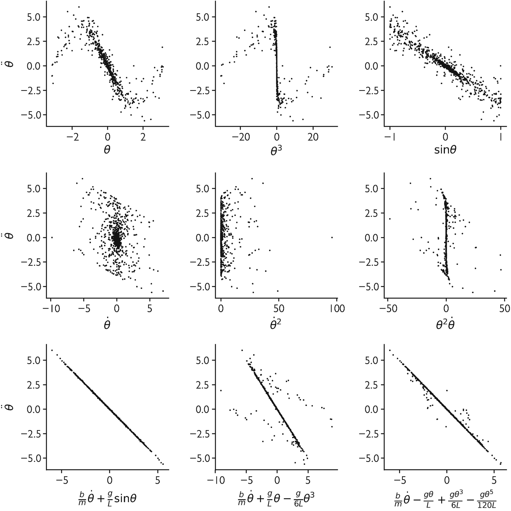
The role of lambda
- \(\) balances data fit vs physics compliance:
- \(= 0\): pure data-driven (standard NN).
- \(\): pure physics (NN solves the PDE).
- Intermediate \(\): compromise between data and physics.
- The optimal \(\) depends on data quality, physics accuracy, and problem specifics.
Choosing lambda
- Too high: model satisfies physics perfectly but ignores noisy data → underfitting data.
- Too low: model fits data well but violates physics → physically inconsistent predictions.
- Adaptive strategies: adjust \(\) during training based on relative magnitudes of \(J_{}\) and \(J_{}\).
- Cross-validation on held-out data can also guide \(\) selection.
PINN architecture
- Typically a standard fully-connected NN (MLP) with smooth activations (tanh, swish).
- Inputs: spatial coordinates \(\) and/or time \(t\).
- Output: physical field values (temperature, velocity, stress).
- Auto-diff is used to compute all required derivatives within the loss function.
- Figure: predicted Burgers field (top) matches exact solution at three time slices (bottom) — trained with only 100 data points (Raissi, Perdikaris, and Karniadakis 2019).
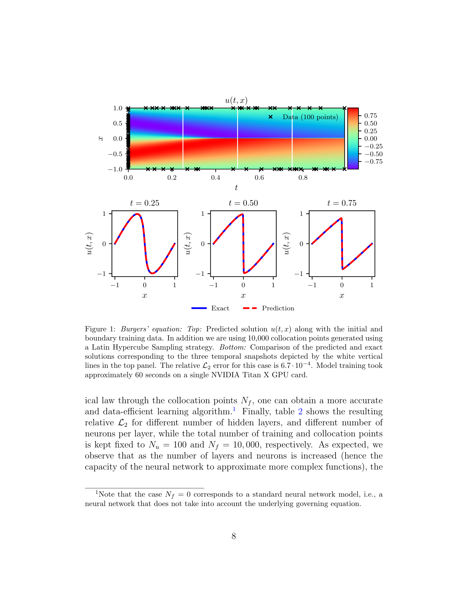
Checkpoint: PINN loss design
- Problem: Heat diffusion \( = \) with noisy temperature measurements.
- Data loss: \(J_{} = i (T_i^{} - f{}(_i, t_i))^2\).
- Physics loss: \(J_{} = _j ( - )^2\).
- Total: \(J = J_{} + J_{}\).
Boundary conditions in PDE problems
- Physical problems require boundary conditions (BCs):
- Dirichlet: \(f(_{}) = a\) (prescribed value).
- Neumann: \((_{}) = b\) (prescribed gradient).
- BCs are essential — without them, the PDE has infinitely many solutions.
Soft BC enforcement
- Add BC violation to the loss:
\[ J_{\text{BC}} = \|f_{\boldsymbol{\theta}}(\mathbf{x}_{\text{boundary}}) - a\|^2 \]
- Simple to implement but BCs are only approximately satisfied.
- The total loss becomes: \(J = J_{} + 1 J{} + 2 J{}\).
- Requires tuning additional weight \(_2\).
Hard BC enforcement: the Lagaris substitution
- Construct the solution so that BCs are satisfied by construction:
\[ f(\mathbf{x}) = A(\mathbf{x}) + B(\mathbf{x}) \cdot \text{NN}(\mathbf{x}) \]
- \(A(\mathbf{x})\) satisfies the BCs.
- \(B(\mathbf{x})\) vanishes at the boundaries.
- The NN only needs to learn the unknown part.
- Guaranteed Consistency: BCs are met even before training starts.
- Search Space: Restricts the model to physically plausible functions.
- Reference: Lagaris, Likas, and Fotiadis (1998).
Lagaris substitution: example
- Problem: \(f(\mathbf{0}) = a\), general ODE/PDE on \([0, L]\).
- Trial solution: \(f(\mathbf{x}) = a + \mathbf{x} \cdot \text{NN}(\mathbf{x})\).
- At \(\mathbf{x} = \mathbf{0}\): \(f(\mathbf{0}) = a + \mathbf{0} \cdot \text{NN}(\mathbf{0}) = a\) ✓ (regardless of NN).
- The NN learns the deviation from the initial condition.
- For \(f(\mathbf{0})=a, f(L)=b\): \(f(\mathbf{x}) = a + \frac{\mathbf{x}}{L}(b-a) + \mathbf{x}(L-\mathbf{x})\text{NN}(\mathbf{x})\).
Lagaris for ODE: \(\mathbf{x}' = \mathbf{x}\), \(\mathbf{x}(0) = \mathbf{1}\)
- Trial solution: \(\mathbf{x}(t) = \mathbf{1} + t \cdot \text{NN}(t)\).
- IC: \(\mathbf{x}(0) = \mathbf{1}\) ✓.
- ODE residual: \(\mathcal{R} = \mathbf{x}'(t) - \mathbf{x}(t) = \text{NN}(t) + t \cdot \text{NN}'(t) - \mathbf{1} - t \cdot \text{NN}(t)\).
- Minimize \(\sum_j \mathcal{R}(t_j)^2\) over collocation points.
- Exact solution: \(\mathbf{x}(t) = e^t \mathbf{1}\). The NN should learn \(\text{NN}(t) \approx (e^t - 1)\mathbf{1}/t\).
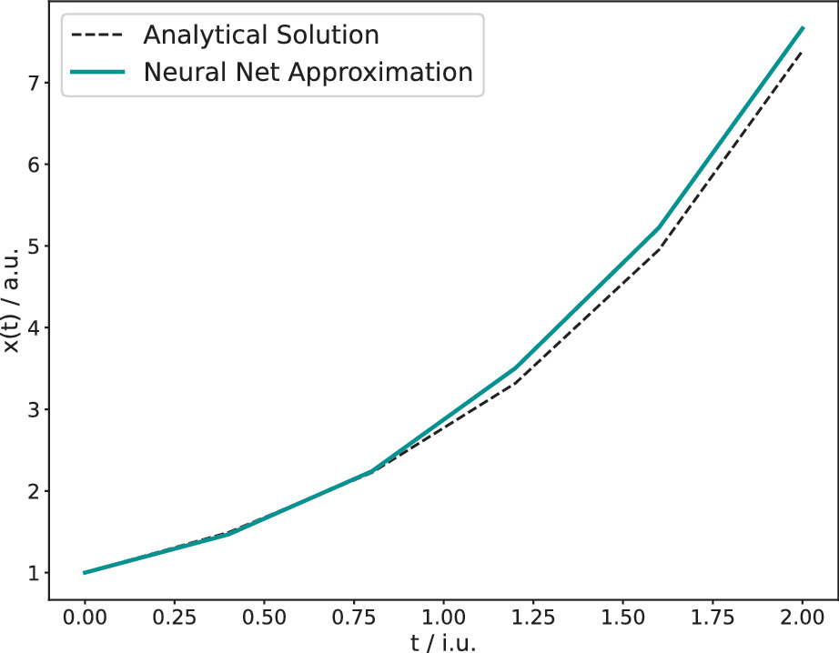
Advantages of hard enforcement
- BCs are exactly satisfied — no penalty term, no violation, no tuning.
- Reduces the search space: the NN only learns the unknown part of the solution.
- Fewer hyperparameters (no \(_{}\)).
- Often leads to faster convergence and better solutions.
Neural integrators and ODE solvers
- Use a NN to parameterize the solution of an ODE.
- Train by minimizing the ODE residual at collocation points.
- The NN produces a continuous, differentiable solution — no time-stepping discretization.
- Advantage: solution at any point \(t\) without marching through time steps.
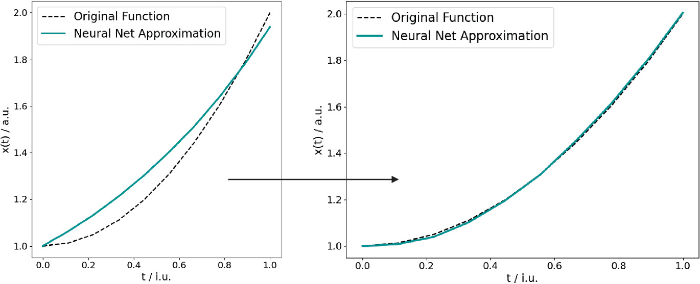
Checkpoint: Lagaris design
- Problem: \(f’’() = g()\), \(f() = \), \(f() = \).
- Trial solution: \(f() = (-) ()\).
- Check: \(f() = () = \) ✓. \(f() = () = \) ✓.
- The NN freely shapes the solution in the interior while BCs are guaranteed.
Occam’s razor and model selection
- Occam’s razor: among models that explain the data equally well, prefer the simplest.
- Physics constraints simplify the model by restricting the hypothesis space.
- A physics-constrained model with 100 parameters may be effectively simpler than an unconstrained model with 10.
- Connects to the effective number of parameters (Unit 12).
Information-theoretic perspective
- Minimum Description Length (MDL): the best model minimizes total description length = model complexity + data residual.
- Physics priors reduce the model complexity term — less needs to be learned from data.
- This provides a formal justification for why physics-informed models generalize better.
Small-data advantage of PINNs
- With only 10 labeled data points, a PINN enforcing the governing ODE can outperform a standard NN trained on 1000 points.
- The physics residual provides supervision at every collocation point — effectively unlimited “free data.”
- Physics feature engineering also exploits domain knowledge: water/binder ratio is a derived physical variable that substantially improves concrete strength prediction.
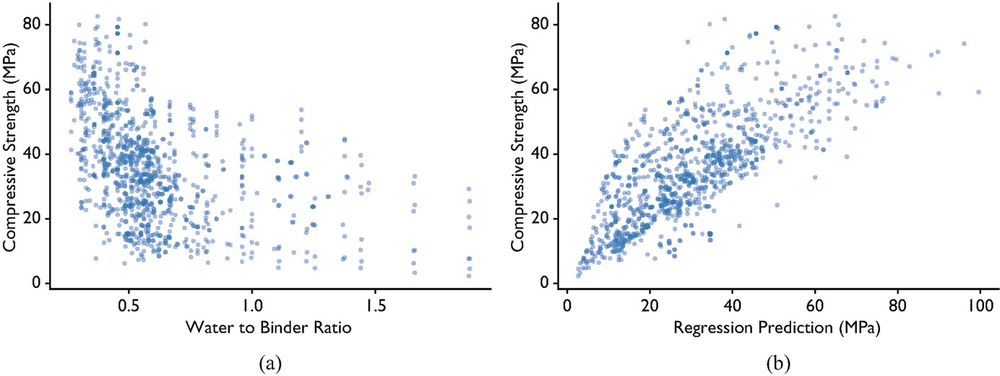
Explainability benefit
- Physics-constrained models are more interpretable:
- The model respects known laws by design — no surprising violations.
- \(\lambda\) quantifies the data-physics tradeoff.
- Residual analysis reveals where the model deviates from physics.
- Process corridors: model the expected probability distribution of a process signal; points outside the corridor flag anomalies.

Limitations: when PINNs fail
- Incorrect physics: if the governing equation is wrong, the PINN converges to a wrong solution.
- Multi-scale problems: features at very different scales (e.g., boundary layers) cause conflicting gradients.
- High-dimensional PDEs: collocation points scale exponentially.
- Convection-dominated PDEs: PINN error increases sharply with the convection coefficient \(\beta\) — standard soft-constraint training fails for large \(\beta\) (Krishnapriyan et al. 2021).
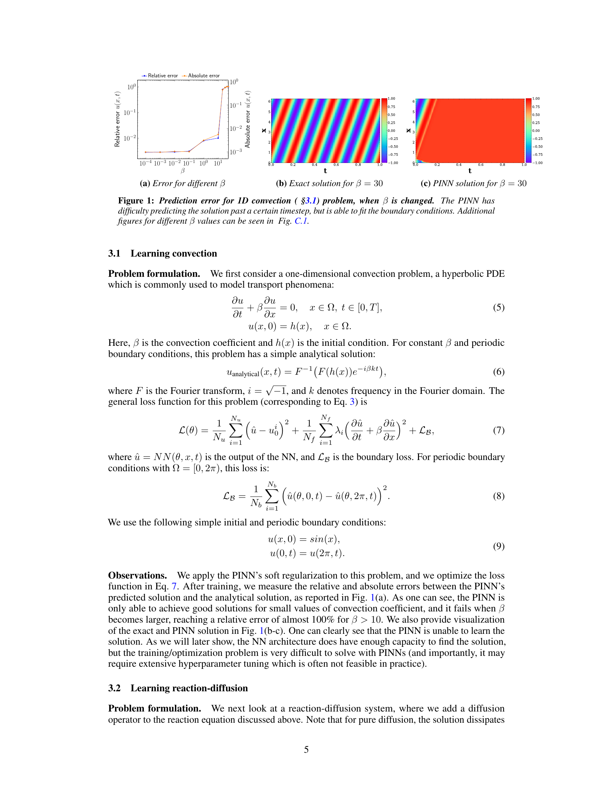
Limitations: optimization challenges
- Balancing \(J_{}\) and \(J_{}\) is notoriously difficult.
- Gradient imbalance: gradients of \(J_{\text{physics}}\) (orange) dominate those of \(J_{\text{data}}\) (blue) by orders of magnitude — the network ignores boundary conditions (Wang, Teng, and Perdikaris 2021).
- Stiff PDEs cause training instability — physics-loss gradients can be very large.
- Spectral bias: NNs learn low-frequency components first, struggle with high-frequency features.
- Active area of research: improved architectures, training strategies, and adaptive \(\lambda\) (Wang, Teng, and Perdikaris 2021).
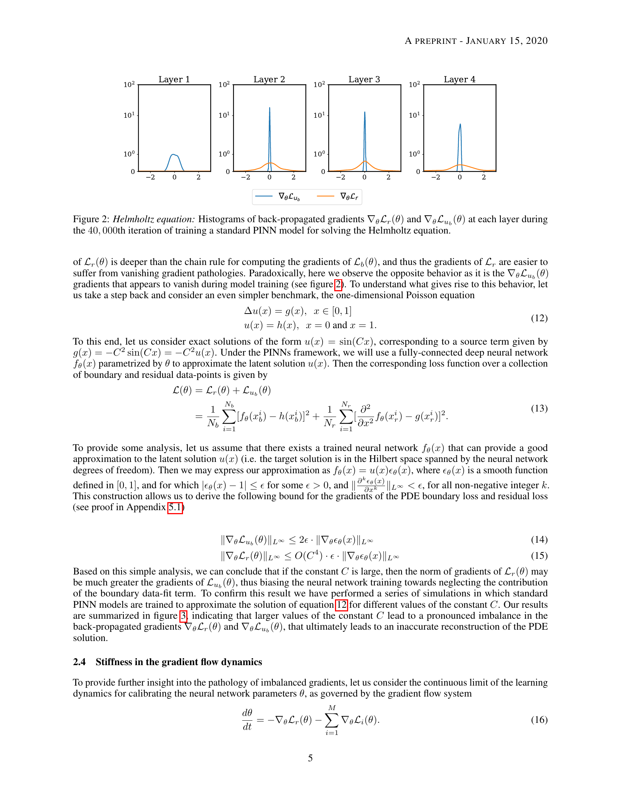
Limitations: computational cost
- Auto-diff through PDE residuals requires computing high-order derivatives — expensive.
- Each training step evaluates physics at \(M\) collocation points — cost scales with domain size.
- For complex 3D problems, PINNs can be slower than traditional solvers.
- PINNs are most competitive when data is very scarce or when inverse problems are solved.
Beyond PINNs: architectural constraints
- Equivariant networks: build symmetries (rotation, translation) into the architecture.
- Hamiltonian NNs: parameterize the Hamiltonian; dynamics automatically conserve energy.
- Neural operators (DeepONet, FNO): learn mappings between function spaces.
- These embed physics more deeply than loss-based constraints.
DeepONet: learning operators between function spaces
- Standard NNs map vectors to vectors. DeepONet maps functions to functions: \(G: u \mapsto G(u)\) (Lu et al. 2021).
- Branch net: encodes the input function \(u\) sampled at fixed sensor locations.
- Trunk net: encodes the query location \(y\) where the output is evaluated.
- Output: \(G(u)(y) = \sum_k b_k(u) \cdot t_k(y)\) — a learned dot product of branch and trunk embeddings.
- Application: PDE solution operators (given an initial condition \(u\), predict the solution field at any later time).
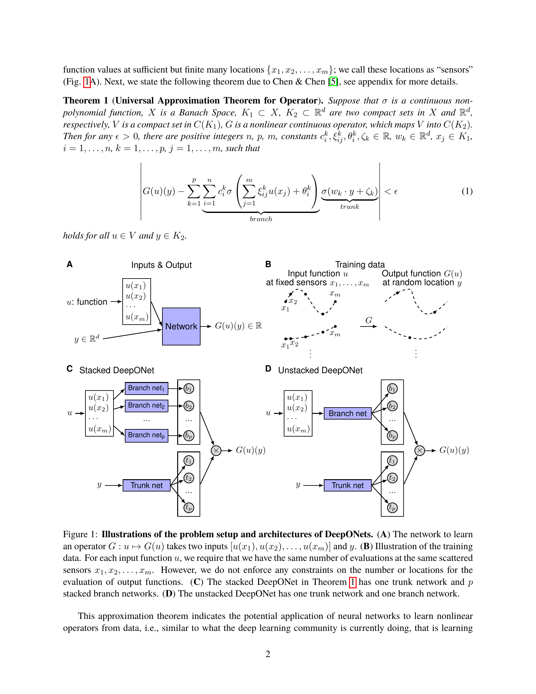
Fourier Neural Operator (FNO)
- FNO learns PDE solution operators by parameterizing the convolution in Fourier space (Li et al. 2021).
- Spectral convolution: lift input to higher-dim representation → apply learned weights to low Fourier modes → transform back.
- Resolution-invariant: trained at one resolution, evaluated at another.
- State-of-the-art for Navier–Stokes, Darcy flow, and weather prediction.
- Key advantage over PINN: inference is a single forward pass (no per-instance optimization).
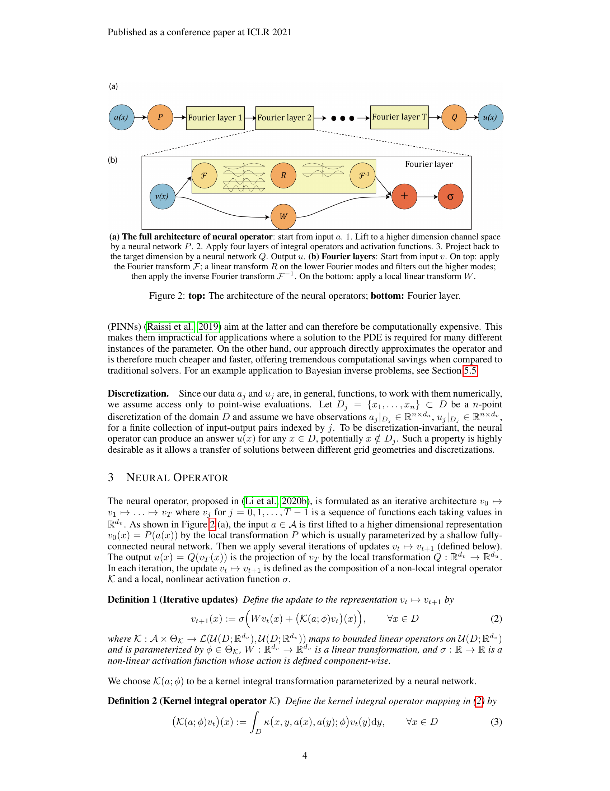
Beyond FNO
- PINO (Li et al. 2024) — pairs FNO’s operator output with a PINN-style physics-residual loss. Closes the data-vs-physics trade-off: FNO learns from data, PINN enforces physics; PINO does both.
- GNN-based PDE solvers (MeshGraphNets, (Pfaff et al. 2021)) — for unstructured meshes where FNO’s regular-grid FFT doesn’t apply. Encode the simulation mesh as a graph; message-passing replaces convolution. Currently the standard for industrial CFD / fluid surrogates.
Hamiltonian Neural Networks (HNN)
- A vanilla NN predicts the next state of a dynamical system; energy is not conserved by construction.
- HNN (Greydanus, Dzamba, and Yosinski 2019) learns the scalar Hamiltonian \(\mathcal{H}(q,p)\); equations of motion follow from:
\[\dot{q} = \frac{\partial \mathcal{H}}{\partial p}, \quad \dot{p} = -\frac{\partial \mathcal{H}}{\partial q}\]
- This guarantees energy conservation by the structure of the network, not by penalty.
- Baseline NN spirals inward (violates conservation); HNN stays on the correct orbit.
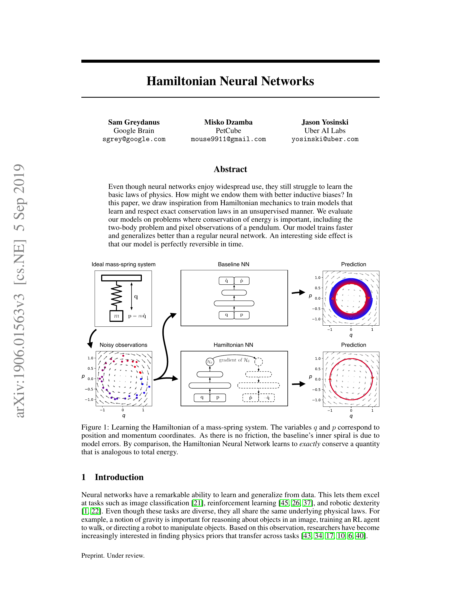
Group-equivariant neural networks
- A function \(f: X \to Y\) is equivariant to a group \(G\) if applying a symmetry \(g \in G\) before or after \(f\) gives the same result (Cohen and Welling 2016):
\[f(g \cdot x) = g \cdot f(x)\]
- Standard CNNs are equivariant to translation. G-CNNs extend this to rotations, reflections, and other symmetry groups.
- Applications: molecular property prediction (rotational symmetry of atoms), crystallography, medical image segmentation.
- Key benefit: fewer parameters needed — symmetry-related outputs are tied by the group structure, not learned independently.
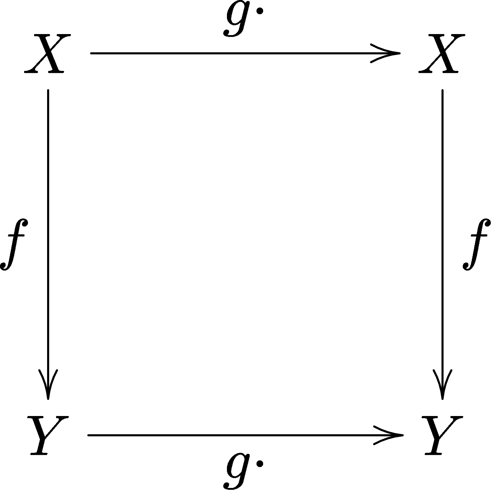
Lecture-essential vs exercise content split
- Lecture: PIML philosophy, data enrichment, PINN loss, Lagaris substitution, Occam’s razor, limitations.
- Exercise: constrained NN regression (symmetry penalty), PINN for first-order ODE, lambda sweep.
Exercise setup summary
- Part A: enforce a known symmetry (e.g., \(f() = f(-)\)) via loss penalty in a regression task.
- Part B: build a PINN for \(’ = \), \((0) = \) using Lagaris substitution; compare to analytical \(e^t \).
- Part C (Bonus): add noisy data points and explore the effect of \(\) on data-physics tradeoff.
Exam-aligned summary: 10 must-know statements
- Physics-informed ML embeds domain knowledge to reduce data requirements.
- Data enrichment adds physics-derived features (FFT, derivatives) to raw inputs.
- The PINN loss is \(J = J_{} + J_{}\).
- \(J_{}\) is the PDE/ODE residual evaluated at collocation points — no labels needed.
- \(\) balances data fidelity against physics compliance.
- The Lagaris substitution enforces boundary conditions exactly by construction.
- Auto-diff computes exact derivatives of NN outputs w.r.t. inputs for physics residuals.
- Physics constraints act as informed regularization, reducing the hypothesis space.
- PINNs excel in small-data regimes where physics provides complementary information.
- Incorrect physics in PINNs leads to confidently wrong predictions — always validate.
Continue
References + reading assignment for next unit
- Required reading before Unit 14:
- Neuer: Ch. 6.1–6.3
- Optional depth:
- Karniadakis et al. (2021): PIML taxonomy
- Raissi et al. (2019): PINN framework
- Lagaris et al. (1998): NN-based ODE/PDE solvers
- Next unit: Explainability, Limits, and Trust — the final lecture.
Cohen, Taco, and Max Welling. 2016. “Group Equivariant Convolutional Networks.” In International Conference on Machine Learning, 2990–99. PMLR. https://arxiv.org/abs/1602.07576.
Greydanus, Sam, Misko Dzamba, and Jason Yosinski. 2019. “Hamiltonian Neural Networks.” Advances in Neural Information Processing Systems 32. https://arxiv.org/abs/1906.01563.
Krishnapriyan, Aditi, Amir Gholami, Shandian Zhe, Robert Kirby, and Michael W Mahoney. 2021. “Characterizing Possible Failure Modes in Physics-Informed Neural Networks.” Advances in Neural Information Processing Systems 34: 26548–60. https://arxiv.org/abs/2109.01050.
Lagaris, Isaac G, Aristidis Likas, and Dimitrios I Fotiadis. 1998. “Artificial Neural Networks for Solving Ordinary and Partial Differential Equations.” IEEE Transactions on Neural Networks 9 (5): 987–1000.
Li, Zongyi, Nikola Kovachki, Kamyar Azizzadenesheli, Burigede Liu, Kaushik Bhattacharya, Andrew Stuart, and Anima Anandkumar. 2021. “Fourier Neural Operator for Parametric Partial Differential Equations.” In International Conference on Learning Representations. https://arxiv.org/abs/2010.08895.
Li, Zongyi, Hongkai Zheng, Nikola Kovachki, David Jin, Haoxuan Chen, Burigede Liu, Kamyar Azizzadenesheli, and Anima Anandkumar. 2024. “Physics-Informed Neural Operator for Learning Partial Differential Equations.” ACM/IMS Journal of Data Science. https://arxiv.org/abs/2111.03794.
Lu, Lu, Pengzhan Jin, Guofei Pang, Zhongqing Zhang, and George Em Karniadakis. 2021. “Learning Nonlinear Operators via DeepONet Based on the Universal Approximation Theorem of Operators.” Nature Machine Intelligence 3 (3): 218–29. https://arxiv.org/abs/1910.03193.
McClarren, Ryan G. 2021. Machine Learning for Engineers: Using Data to Solve Problems for Physical Systems. Springer.
Neuer, Michael et al. 2024. Machine Learning for Engineers: Introduction to Physics-Informed, Explainable Learning Methods for AI in Engineering Applications. Springer Nature.
Pfaff, Tobias, Meire Fortunato, Alvaro Sanchez-Gonzalez, and Peter W. Battaglia. 2021. “Learning Mesh-Based Simulation with Graph Networks.” In International Conference on Learning Representations (ICLR). https://arxiv.org/abs/2010.03409.
Raissi, Maziar, Paris Perdikaris, and George Em Karniadakis. 2019. “Physics-Informed Neural Networks: A Deep Learning Framework for Solving Forward and Inverse Problems Involving Nonlinear Partial Differential Equations.” Journal of Computational Physics 378: 686–707. https://arxiv.org/abs/1711.10561.
Wang, Sifan, Yujun Teng, and Paris Perdikaris. 2021. “Understanding and Mitigating Gradient Flow Pathologies in Physics-Informed Neural Networks.” SIAM Journal on Scientific Computing 43 (5): A3055–81. https://arxiv.org/abs/2001.04536.

© Philipp Pelz - Mathematical Foundations of AI & ML